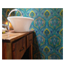

Barquillas
SALPLAST dispone de una amplia variedad de barquillas para hidrogruas.
Disponibles barquillas simples y dobles con herrajes lista para colocar.
Camaras Septicas
SALPLAST realiza plantas de tratamientos de efluentes cloacales domiciliarias industriales. SALPLAST realiza camaras septicas de distintos tamaños.

Revestimientos
SALPLAST elabora revestimientos en fibra de vidrio, dandole a tu hogar o industria un estilo unico. SALPLAST brinda solucio nes vinculadas a la fibra de vidrio, consulte.
SALPLAST Productos
Fabricación de barquillas para hidrogruas
Fabricación de autopartes
Fabricación de articulos para piletas
Fabricación de elementos de competición
- Fabricación de cerramientos de camiones
- Fabricación de paragolpes